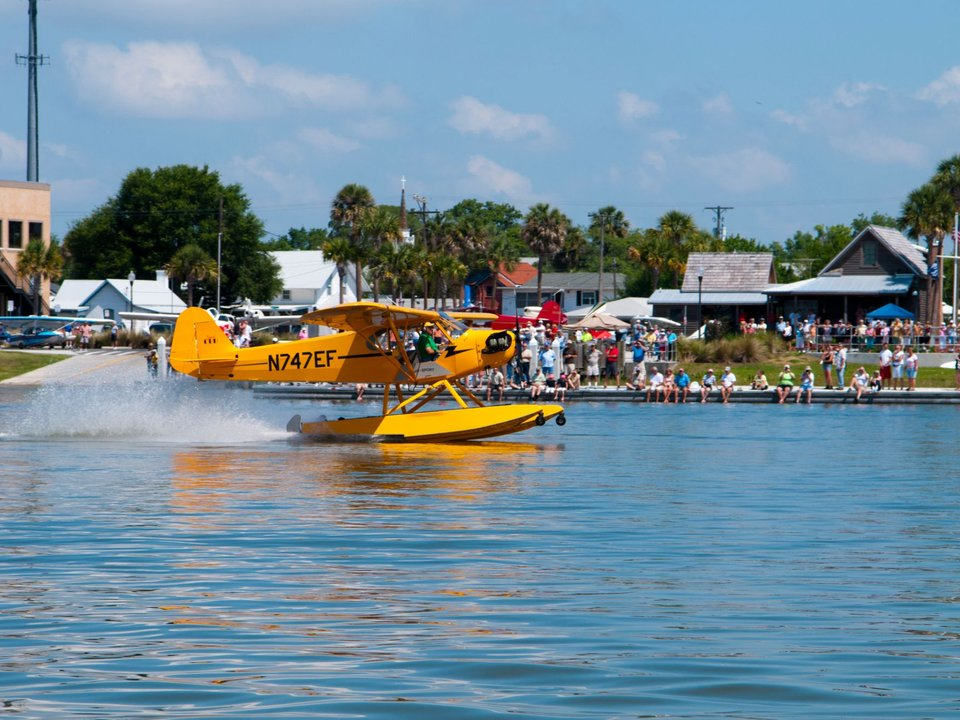

Silver Lake · Harbor inn
Ocracoke Harbor Inn
Rooms and suites with porches over Silver Lake harbor.
Official details for Ocracoke Harbor InnFly to an island with no bridge.
Ocracoke is the Outer Banks at its most remote: a small fishing village around Silver Lake harbor, 16 miles of undeveloped national seashore, and no bridge to the mainland. Fly in to the National Park Service airstrip a short walk from the beach, rent bikes or a golf cart, see the 1823 lighthouse and the Banker ponies, eat at Howard’s Pub, and look for Teach’s Hole, where Blackbeard was killed in 1718.

Time illustration: direct distance at 150 KTAS plus 15 minutes for departure and arrival, matching the discovery page. Use ForeFlight for your actual flight plan.
W95, Ocracoke Island Airport, is a non-towered National Park Service airstrip at sea level with a 2,998-foot runway, about a mile from the village and steps from the beach.
Ocracoke Island Airport, Ocracoke, NC
No FBO and no fuel; tie-downs only. Short, narrow runway with frequent crosswinds off the ocean. Birds and pedestrians near the field. Fuel at Billy Mitchell (KHSE) or Dare County (KMQI). No live fuel price is shown.
Carolina coast flying: summer afternoon thunderstorms, sea fog and low morning stratus, gusty sea breezes, and hurricanes from June to November. About 170 nm from Myrtle Beach.
Rates and availability need travel dates. Summer books early.
Rooms and suites with porches over Silver Lake harbor.
Official details for Ocracoke Harbor InnThe island’s first hotel, from 1936.
Official details for Blackbeard’s LodgeInns and rentals on the Outer Banks.
Outer Banks Visitors Bureau for More places to stayPrices and availability for your dates, through our partner Stay22. This is an affiliate link: we may earn a commission at no cost to you. The picks above are never paid.
Reserve weekend dinners.
A long-running island pub with a screened porch and a big beer list.
Official details for Howard’s PubLocal seafood and a patio in the village.
Official details for DajioRestaurants on the Outer Banks.
Outer Banks Visitors Bureau for More restaurantsBring bug spray in summer.
An 1823 lighthouse in the village, one of the oldest still working.
National Park ServiceThis prototype links to the local visitor site. It does not yet match events to your travel dates.
Warm water and long days.
National Park Service for Beach seasonQuieter village and cooler weather.
Outer Banks Visitors Bureau for Shoulder seasonWatch the tropics before you go.
National Park Service for Hurricane seasonCheck the local calendar when choosing a weekend, and confirm dates and tickets with the organizer.
A sample island weekend. No bookings or availability confirmed.
Land at W95 mid-morning.
Lunch in the village.
A short walk, then back to the airport.
Land at W95, subject to weather and your actual flight plan.
Walk to the beach.
Dinner at Howard’s Pub.
Bike to the lighthouse.
The Banker ponies and Silver Lake.
Dinner at Dajio.
One more beach walk.
Check the crosswind and plan fuel at KHSE or KMQI.
Watch the afternoon sea breeze and summer storms; leave in the morning.
Bike to the lighthouse and beach.
Explore.
Dinner in town.
These details make the difference between an appealing list and a usable getaway.
Lodging, then bikes or a golf cart.
Plan fuel on the mainland.
2,998 feet with ocean crosswinds.
May to October.
Research-based selections, not personal-visit endorsements. Researched November 1, 2026. Confirm hours, prices and availability directly with each place before booking. Spotted something out of date, or have a favorite we missed? Email us at hello@wingawayweekends.com.
WingAway Weekends helps you discover the destination. Use ForeFlight and current official aviation information for route, performance, weather, NOTAMs and preflight decisions. Flight planning and PIC responsibility stay with the pilot.